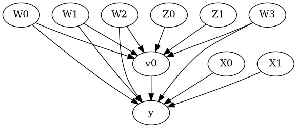

Conditional Average Treatment Effects (CATE) with DoWhy and EconML#
This is an experimental feature where we use EconML methods from DoWhy. Using EconML allows CATE estimation using different methods.
All four steps of causal inference in DoWhy remain the same: model, identify, estimate, and refute. The key difference is that we now call econml methods in the estimation step. There is also a simpler example using linear regression to understand the intuition behind CATE estimators.
All datasets are generated using linear structural equations.
[1]:
%load_ext autoreload
%autoreload 2
[2]:
import numpy as np
import pandas as pd
import logging
import dowhy
dowhy.enable_notebook_rendering()
from dowhy import CausalModel
import dowhy.datasets
import econml
import warnings
warnings.filterwarnings('ignore')
BETA = 10
[3]:
data = dowhy.datasets.linear_dataset(BETA, num_common_causes=4, num_samples=10000,
num_instruments=2, num_effect_modifiers=2,
num_treatments=1,
treatment_is_binary=False,
num_discrete_common_causes=2,
num_discrete_effect_modifiers=0,
one_hot_encode=False)
df=data['df']
print(df.head())
print("True causal estimate is", data["ate"])
X0 X1 Z0 Z1 W0 W1 W2 W3 v0 \
0 -0.666412 0.534568 1.0 0.999154 1.719642 0.769401 2 2 43.016567
1 -1.316945 2.231302 1.0 0.435467 0.606403 -0.325796 0 1 17.729527
2 -1.605977 1.259444 1.0 0.128291 0.633752 -1.932073 1 3 13.160350
3 -2.125261 0.699091 1.0 0.301448 1.533766 1.681187 1 3 35.988573
4 -0.361991 1.340311 1.0 0.777906 -0.164172 0.335613 0 1 22.549513
y
0 383.657742
1 149.441714
2 82.347679
3 182.998309
4 234.755722
True causal estimate is 8.407236491138969
[4]:
model = CausalModel(data=data["df"],
treatment=data["treatment_name"], outcome=data["outcome_name"],
graph=data["gml_graph"])
[5]:
model.view_model()
from IPython.display import Image, display
display(Image(filename="causal_model.png"))


[6]:
identified_estimand= model.identify_effect(proceed_when_unidentifiable=True)
print(identified_estimand)
Estimand type: EstimandType.NONPARAMETRIC_ATE
### Estimand : 1
Estimand name: backdoor
Estimand expression:
d
─────(E[y|W2,W3,W0,W1])
d[v₀]
Estimand assumption 1, Unconfoundedness: If U→{v0} and U→y then P(y|v0,W2,W3,W0,W1,U) = P(y|v0,W2,W3,W0,W1)
### Estimand : 2
Estimand name: iv
Estimand expression:
⎡ -1⎤
⎢ d ⎛ d ⎞ ⎥
E⎢─────────(y)⋅⎜─────────([v₀])⎟ ⎥
⎣d[Z₁ Z₀] ⎝d[Z₁ Z₀] ⎠ ⎦
Estimand assumption 1, As-if-random: If U→→y then ¬(U →→{Z1,Z0})
Estimand assumption 2, Exclusion: If we remove {Z1,Z0}→{v0}, then ¬({Z1,Z0}→y)
### Estimand : 3
Estimand name: frontdoor
No such variable(s) found!
### Estimand : 4
Estimand name: general_adjustment
Estimand expression:
d
─────(E[y|W0,W3,W1,W2])
d[v₀]
Estimand assumption 1, Unconfoundedness: If U→{v0} and U→y then P(y|v0,W0,W3,W1,W2,U) = P(y|v0,W0,W3,W1,W2)
Linear Model#
First, let us build some intuition using a linear model for estimating CATE. The effect modifiers (that lead to a heterogeneous treatment effect) can be modeled as interaction terms with the treatment. Thus, their value modulates the effect of treatment.
Below the estimated effect of changing treatment from 0 to 1.
[7]:
linear_estimate = model.estimate_effect(identified_estimand,
method_name="backdoor.linear_regression",
control_value=0,
treatment_value=1)
print(linear_estimate)
*** Causal Estimate ***
## Identified estimand
Estimand type: EstimandType.NONPARAMETRIC_ATE
### Estimand : 1
Estimand name: backdoor
Estimand expression:
d
─────(E[y|W2,W3,W0,W1])
d[v₀]
Estimand assumption 1, Unconfoundedness: If U→{v0} and U→y then P(y|v0,W2,W3,W0,W1,U) = P(y|v0,W2,W3,W0,W1)
## Realized estimand
b: y~v0+W2+W3+W0+W1+v0*X1+v0*X0
Target units:
## Estimate
Mean value: 8.407348940750182
### Conditional Estimates
__categorical__X1 __categorical__X0
(-3.2119999999999997, 0.0856] (-4.524, -1.735] 3.142778
(-1.735, -1.14] 5.516848
(-1.14, -0.634] 7.026768
(-0.634, -0.0506] 8.511550
(-0.0506, 2.73] 10.919970
(0.0856, 0.686] (-4.524, -1.735] 3.897105
(-1.735, -1.14] 6.362465
(-1.14, -0.634] 7.872175
(-0.634, -0.0506] 9.429750
(-0.0506, 2.73] 11.756219
(0.686, 1.178] (-4.524, -1.735] 4.436060
(-1.735, -1.14] 6.904450
(-1.14, -0.634] 8.432043
(-0.634, -0.0506] 9.889617
(-0.0506, 2.73] 12.368502
(1.178, 1.77] (-4.524, -1.735] 5.002259
(-1.735, -1.14] 7.392745
(-1.14, -0.634] 8.938041
(-0.634, -0.0506] 10.512506
(-0.0506, 2.73] 12.791330
(1.77, 5.263] (-4.524, -1.735] 5.924966
(-1.735, -1.14] 8.289321
(-1.14, -0.634] 9.825263
(-0.634, -0.0506] 11.323843
(-0.0506, 2.73] 13.704561
dtype: float64
EconML methods#
We now move to the more advanced methods from the EconML package for estimating CATE.
First, let us look at the double machine learning estimator. Method_name corresponds to the fully qualified name of the class that we want to use. For double ML, it is “econml.dml.DML”.
Target units defines the units over which the causal estimate is to be computed. This can be a lambda function filter on the original dataframe, a new Pandas dataframe, or a string corresponding to the three main kinds of target units (“ate”, “att” and “atc”). Below we show an example of a lambda function.
Method_params are passed directly to EconML. For details on allowed parameters, refer to the EconML documentation.
[8]:
from sklearn.preprocessing import PolynomialFeatures
from sklearn.linear_model import LassoCV
from sklearn.ensemble import GradientBoostingRegressor
dml_estimate = model.estimate_effect(identified_estimand, method_name="backdoor.econml.dml.DML",
control_value = 0,
treatment_value = 1,
target_units = lambda df: df["X0"]>1, # condition used for CATE
confidence_intervals=False,
method_params={"init_params":{'model_y':GradientBoostingRegressor(),
'model_t': GradientBoostingRegressor(),
"model_final":LassoCV(fit_intercept=False),
'featurizer':PolynomialFeatures(degree=1, include_bias=False)},
"fit_params":{}})
print(dml_estimate)
*** Causal Estimate ***
## Identified estimand
Estimand type: EstimandType.NONPARAMETRIC_ATE
### Estimand : 1
Estimand name: backdoor
Estimand expression:
d
─────(E[y|W2,W3,W0,W1])
d[v₀]
Estimand assumption 1, Unconfoundedness: If U→{v0} and U→y then P(y|v0,W2,W3,W0,W1,U) = P(y|v0,W2,W3,W0,W1)
## Realized estimand
b: y~v0+W2+W3+W0+W1 | X1,X0
Target units: Data subset defined by a function
## Estimate
Mean value: 14.870416844246341
Effect estimates: [[13.26991594]
[14.72981094]
[14.52461421]
[13.40635783]
[13.36309219]
[12.86549399]
[14.34088534]
[16.32227332]
[15.30773897]
[14.65885324]
[15.98687081]
[15.29309505]
[13.71759052]
[17.0438484 ]
[14.25930777]
[15.61214811]
[14.574375 ]
[17.9728994 ]
[15.17190907]
[14.58758025]
[13.70852684]
[11.58739872]
[15.48442632]
[15.84043352]
[15.38590733]
[16.80611557]
[14.88688678]
[14.39224219]
[13.74618208]
[15.81419341]
[16.03246012]
[17.25335936]
[13.25001137]
[16.15442057]
[13.74092107]
[15.41579026]
[15.00299852]
[15.32789889]
[14.98383321]
[14.81613361]
[14.85445481]
[14.65400063]
[14.77200278]
[16.00001992]
[15.12559314]
[15.7056316 ]
[13.1548121 ]
[16.0762164 ]
[13.05208392]
[14.48850895]
[17.06322759]
[13.71485348]
[14.38641661]
[15.32800455]
[15.55287193]
[14.78913675]
[14.99317474]
[15.05561111]
[14.81016548]
[14.29624295]
[14.75585773]
[15.41186724]
[13.02567747]
[13.03978346]
[14.95318062]
[14.44408815]
[15.10240268]
[15.02680818]
[15.07915092]
[17.310155 ]
[14.98303815]
[16.84031325]
[14.3798745 ]
[15.75786102]
[16.32260508]
[14.67448646]
[15.96647967]
[13.1182083 ]
[12.11423543]
[14.24891081]
[14.98732481]
[13.53182785]
[14.43183376]
[16.68379472]
[15.23369691]
[14.76538002]
[15.14277046]
[13.88860722]
[14.16172992]
[14.86386417]
[16.27646837]
[16.48427843]
[15.65118311]
[20.23479633]
[17.31022529]
[14.61185162]
[15.59530035]
[14.49067763]
[17.08703807]
[16.35512755]
[14.05352337]
[13.3189349 ]
[14.50582923]
[15.09598078]
[15.9691953 ]
[14.7027032 ]
[12.97263446]
[16.64147915]
[15.05792142]
[16.19538187]
[14.06392661]
[12.89835159]
[14.75124321]
[14.06191885]
[13.77319285]
[15.5978207 ]
[13.34955495]
[15.71713663]
[13.70181416]
[14.09476161]
[12.96941515]
[14.32015691]
[16.50221706]
[12.78622109]
[15.18123267]
[14.50979446]
[15.68474398]
[14.52217106]
[16.6277278 ]
[14.44066953]
[16.87314453]
[15.72041042]
[18.71187266]
[14.75527485]
[13.69873206]
[14.50499285]
[16.82189051]
[14.07453882]
[15.23571348]
[13.79118454]
[15.79016161]
[14.16857874]
[14.14073811]
[15.47275048]
[13.32889172]
[16.26817082]
[11.96166683]
[17.14132708]
[14.06388474]
[14.0866389 ]
[14.06803298]
[16.84200914]
[14.54788324]
[15.07041366]
[15.29095215]
[14.38569336]
[13.16873289]
[15.52890385]
[16.2008963 ]
[13.83524675]
[14.2208552 ]
[15.3341053 ]
[12.908673 ]
[12.58497077]
[15.8075268 ]
[15.4210516 ]
[13.2547995 ]
[12.70752197]
[15.03170761]
[15.01866834]
[12.7305668 ]
[13.31458147]
[14.18075859]
[15.25441144]
[14.50262319]
[14.69843794]
[11.71360338]
[16.16627752]
[15.35308515]
[15.00626805]
[13.17254658]
[15.85637273]
[13.85496018]
[12.90141251]
[15.60253078]
[13.61827243]
[15.89231804]
[14.36008932]
[13.69672036]
[13.6396028 ]
[14.98771372]
[15.51730384]
[15.82513237]
[14.53792364]
[15.04701578]
[16.09765051]
[14.5391908 ]
[16.44439315]
[13.33391017]
[14.47525082]
[13.73010166]
[16.478706 ]
[16.10389364]
[17.83849039]
[16.24730495]
[14.97664247]
[14.93819537]
[14.88147291]
[15.49789963]
[14.27135813]
[15.71014424]
[16.1547053 ]
[17.63353946]
[15.15527827]
[14.44327343]
[15.78954368]
[14.11580666]
[12.3602504 ]
[15.12757477]
[12.59291521]
[14.08169481]
[18.92682216]
[13.08188153]
[14.52386328]
[12.64871453]
[16.41528342]
[14.8004929 ]
[14.0411671 ]
[16.12189888]
[11.76147331]
[14.56145218]
[16.29712864]
[12.11296647]
[14.49642777]
[13.62841255]
[14.72196615]
[14.12971447]
[15.25817146]
[15.25137751]
[12.77369167]
[14.15583792]
[13.46446272]
[14.80279659]
[12.20891954]
[15.0368052 ]
[15.23124558]
[17.58893575]
[15.11877486]
[16.45285946]
[13.23353806]
[13.00706329]
[14.38193032]
[17.01120552]
[18.49750279]
[14.10746242]
[12.9467582 ]
[14.1352572 ]
[14.33064316]
[17.17764502]
[16.76136509]
[13.59031309]
[14.73039985]
[14.90167469]
[14.77516085]
[14.68843874]
[14.11223173]
[17.67745359]
[15.8391071 ]
[15.97609233]
[18.55080289]
[14.76803178]
[13.13731452]
[15.3337751 ]
[13.47205671]
[13.37048884]
[13.88433462]
[15.88652351]
[15.45086861]
[16.93143327]
[14.22513153]]
[9]:
print("True causal estimate is", data["ate"])
True causal estimate is 8.407236491138969
[10]:
dml_estimate = model.estimate_effect(identified_estimand, method_name="backdoor.econml.dml.DML",
control_value = 0,
treatment_value = 1,
target_units = 1, # condition used for CATE
confidence_intervals=False,
method_params={"init_params":{'model_y':GradientBoostingRegressor(),
'model_t': GradientBoostingRegressor(),
"model_final":LassoCV(fit_intercept=False),
'featurizer':PolynomialFeatures(degree=1, include_bias=True)},
"fit_params":{}})
print(dml_estimate)
*** Causal Estimate ***
## Identified estimand
Estimand type: EstimandType.NONPARAMETRIC_ATE
### Estimand : 1
Estimand name: backdoor
Estimand expression:
d
─────(E[y|W2,W3,W0,W1])
d[v₀]
Estimand assumption 1, Unconfoundedness: If U→{v0} and U→y then P(y|v0,W2,W3,W0,W1,U) = P(y|v0,W2,W3,W0,W1)
## Realized estimand
b: y~v0+W2+W3+W0+W1 | X1,X0
Target units:
## Estimate
Mean value: 8.414019541087667
Effect estimates: [[8.68220668]
[8.46535684]
[6.64011572]
...
[5.05133811]
[8.85686527]
[7.86444501]]
CATE Object and Confidence Intervals#
EconML provides its own methods to compute confidence intervals. Using BootstrapInference in the example below.
[11]:
from sklearn.preprocessing import PolynomialFeatures
from sklearn.linear_model import LassoCV
from sklearn.ensemble import GradientBoostingRegressor
from econml.inference import BootstrapInference
dml_estimate = model.estimate_effect(identified_estimand,
method_name="backdoor.econml.dml.DML",
target_units = "ate",
confidence_intervals=True,
method_params={"init_params":{'model_y':GradientBoostingRegressor(),
'model_t': GradientBoostingRegressor(),
"model_final": LassoCV(fit_intercept=False),
'featurizer':PolynomialFeatures(degree=1, include_bias=True)},
"fit_params":{
'inference': BootstrapInference(n_bootstrap_samples=100, n_jobs=-1),
}
})
print(dml_estimate)
*** Causal Estimate ***
## Identified estimand
Estimand type: EstimandType.NONPARAMETRIC_ATE
### Estimand : 1
Estimand name: backdoor
Estimand expression:
d
─────(E[y|W2,W3,W0,W1])
d[v₀]
Estimand assumption 1, Unconfoundedness: If U→{v0} and U→y then P(y|v0,W2,W3,W0,W1,U) = P(y|v0,W2,W3,W0,W1)
## Realized estimand
b: y~v0+W2+W3+W0+W1 | X1,X0
Target units: ate
## Estimate
Mean value: 8.444237162885992
Effect estimates: [[8.6812519 ]
[8.58666168]
[6.71687246]
...
[5.13119986]
[8.78083159]
[7.91949794]]
95.0% confidence interval: [[[8.74975884 8.6279173 6.70538375 ... 5.01426842 8.75069088 7.97453523]]
[[8.92793194 8.92990246 6.8923377 ... 5.26495187 9.05569908 8.1332551 ]]]
Can provide a new inputs as target units and estimate CATE on them.#
[12]:
test_cols= data['effect_modifier_names'] # only need effect modifiers' values
test_arr = [np.random.uniform(0,1, 10) for _ in range(len(test_cols))] # all variables are sampled uniformly, sample of 10
test_df = pd.DataFrame(np.array(test_arr).transpose(), columns=test_cols)
dml_estimate = model.estimate_effect(identified_estimand,
method_name="backdoor.econml.dml.DML",
target_units = test_df,
confidence_intervals=False,
method_params={"init_params":{'model_y':GradientBoostingRegressor(),
'model_t': GradientBoostingRegressor(),
"model_final":LassoCV(),
'featurizer':PolynomialFeatures(degree=1, include_bias=True)},
"fit_params":{}
})
print(dml_estimate.cate_estimates)
[[12.71522234]
[12.62273647]
[11.26670509]
[12.68350226]
[11.29036627]
[12.79075332]
[12.14211584]
[10.79957942]
[10.70932958]
[12.67764519]]
Can also retrieve the raw EconML estimator object for any further operations#
[13]:
print(dml_estimate._estimator_object)
<econml.dml.dml.DML object at 0x7f0d81822c90>
Works with any EconML method#
In addition to double machine learning, below we example analyses using orthogonal forests, DRLearner (bug to fix), and neural network-based instrumental variables.
Binary treatment, Binary outcome#
[14]:
data_binary = dowhy.datasets.linear_dataset(BETA, num_common_causes=4, num_samples=10000,
num_instruments=1, num_effect_modifiers=2,
treatment_is_binary=True, outcome_is_binary=True)
# convert boolean values to {0,1} numeric
data_binary['df'].v0 = data_binary['df'].v0.astype(int)
data_binary['df'].y = data_binary['df'].y.astype(int)
print(data_binary['df'])
model_binary = CausalModel(data=data_binary["df"],
treatment=data_binary["treatment_name"], outcome=data_binary["outcome_name"],
graph=data_binary["gml_graph"])
identified_estimand_binary = model_binary.identify_effect(proceed_when_unidentifiable=True)
X0 X1 Z0 W0 W1 W2 W3 v0 y
0 -1.686241 2.345787 1.0 1.962267 -0.444550 0.395400 0.616622 1 1
1 -0.715648 0.692386 1.0 -0.255170 -1.543543 -0.867408 -0.309282 1 0
2 -0.100824 0.877241 1.0 -1.803501 0.573643 2.100891 0.401766 1 1
3 0.659293 1.588773 1.0 0.125201 0.596591 -0.198062 -1.310828 1 1
4 -1.329519 0.022486 1.0 0.287444 -0.066244 -0.021282 -0.680408 1 1
... ... ... ... ... ... ... ... .. ..
9995 -0.405129 0.700049 1.0 0.754266 -0.203031 2.669522 -0.673984 1 1
9996 0.285214 2.028980 0.0 0.229851 -1.096635 0.905058 -0.872433 1 1
9997 -1.915658 -0.795445 1.0 0.729255 -0.702772 -0.811784 0.544856 1 0
9998 -2.801027 -0.175587 1.0 -1.999075 -0.455435 1.106856 1.351359 1 0
9999 0.033705 -0.274669 1.0 0.483791 1.159535 -1.072892 -0.430205 1 1
[10000 rows x 9 columns]
Using DRLearner estimator#
[15]:
from sklearn.linear_model import LogisticRegressionCV
#todo needs binary y
drlearner_estimate = model_binary.estimate_effect(identified_estimand_binary,
method_name="backdoor.econml.dr.LinearDRLearner",
confidence_intervals=False,
method_params={"init_params":{
'model_propensity': LogisticRegressionCV(cv=3, solver='lbfgs', multi_class='auto')
},
"fit_params":{}
})
print(drlearner_estimate)
print("True causal estimate is", data_binary["ate"])
*** Causal Estimate ***
## Identified estimand
Estimand type: EstimandType.NONPARAMETRIC_ATE
### Estimand : 1
Estimand name: backdoor
Estimand expression:
d
─────(E[y|W2,W3,W0,W1])
d[v₀]
Estimand assumption 1, Unconfoundedness: If U→{v0} and U→y then P(y|v0,W2,W3,W0,W1,U) = P(y|v0,W2,W3,W0,W1)
## Realized estimand
b: y~v0+W2+W3+W0+W1 | X1,X0
Target units: ate
## Estimate
Mean value: 0.2939400406766587
Effect estimates: [[ 0.36482224]
[ 0.3206569 ]
[ 0.41027534]
...
[ 0.03818201]
[-0.00631139]
[ 0.31609243]]
True causal estimate is 0.2564
Instrumental Variable Method#
[16]:
dmliv_estimate = model.estimate_effect(identified_estimand,
method_name="iv.econml.iv.dml.DMLIV",
target_units = lambda df: df["X0"]>-1,
confidence_intervals=False,
method_params={"init_params":{
'discrete_treatment':False,
'discrete_instrument':False
},
"fit_params":{}})
print(dmliv_estimate)
*** Causal Estimate ***
## Identified estimand
Estimand type: EstimandType.NONPARAMETRIC_ATE
### Estimand : 1
Estimand name: iv
Estimand expression:
⎡ -1⎤
⎢ d ⎛ d ⎞ ⎥
E⎢─────────(y)⋅⎜─────────([v₀])⎟ ⎥
⎣d[Z₁ Z₀] ⎝d[Z₁ Z₀] ⎠ ⎦
Estimand assumption 1, As-if-random: If U→→y then ¬(U →→{Z1,Z0})
Estimand assumption 2, Exclusion: If we remove {Z1,Z0}→{v0}, then ¬({Z1,Z0}→y)
## Realized estimand
b: y~v0+W2+W3+W0+W1 | X1,X0
Target units: Data subset defined by a function
## Estimate
Mean value: 10.470824569120117
Effect estimates: [[ 8.67551024]
[10.28251605]
[11.87750582]
...
[ 8.11095014]
[10.8431423 ]
[ 8.89838849]]
Metalearners#
[17]:
data_experiment = dowhy.datasets.linear_dataset(BETA, num_common_causes=5, num_samples=10000,
num_instruments=2, num_effect_modifiers=5,
treatment_is_binary=True, outcome_is_binary=False)
# convert boolean values to {0,1} numeric
data_experiment['df'].v0 = data_experiment['df'].v0.astype(int)
print(data_experiment['df'])
model_experiment = CausalModel(data=data_experiment["df"],
treatment=data_experiment["treatment_name"], outcome=data_experiment["outcome_name"],
graph=data_experiment["gml_graph"])
identified_estimand_experiment = model_experiment.identify_effect(proceed_when_unidentifiable=True)
X0 X1 X2 X3 X4 Z0 Z1 \
0 -0.490563 2.226197 -0.661940 1.794697 -2.488252 0.0 0.273198
1 -0.080715 0.682364 -0.901249 2.476924 -0.685083 0.0 0.155330
2 -1.371756 0.840870 -0.719101 0.897046 -1.768687 1.0 0.753275
3 -1.405812 1.080950 -1.500821 1.142495 -1.883717 0.0 0.512573
4 -0.261292 -2.257767 -1.390009 -0.181359 -0.454468 0.0 0.701013
... ... ... ... ... ... ... ...
9995 1.524262 1.930637 -0.878321 0.642784 -1.571164 0.0 0.618438
9996 1.194830 -0.501506 0.436434 1.616542 -0.466802 0.0 0.068455
9997 0.201473 1.127245 -0.089944 0.693918 -0.301478 0.0 0.760761
9998 0.307838 -1.388044 -1.691394 0.396183 -0.705186 1.0 0.163632
9999 -1.021799 0.721347 -0.357118 1.411943 1.152588 1.0 0.315473
W0 W1 W2 W3 W4 v0 y
0 0.973538 -0.088107 -0.231926 -0.000957 -1.230121 1 26.967857
1 -1.308527 -0.864667 0.525458 0.637899 -0.815617 0 -3.642155
2 1.207592 -2.359419 0.762003 0.415608 0.774597 1 17.326801
3 0.950279 -1.588301 -0.141021 1.523245 -1.247255 1 21.149550
4 1.318971 0.148925 0.493435 1.218901 -0.345767 1 7.109764
... ... ... ... ... ... .. ...
9995 2.287130 0.108397 -0.550736 0.855386 0.442983 1 38.390100
9996 -0.152757 -2.635942 -0.187264 0.390075 -1.331977 0 -1.051185
9997 -0.152074 -1.810566 0.654666 3.867260 -0.982324 1 33.524616
9998 0.985417 -0.262232 1.918011 -0.565839 -0.539084 1 6.677773
9999 -0.783534 1.700120 -0.531275 2.246224 -0.212591 1 22.444817
[10000 rows x 14 columns]
[18]:
from sklearn.ensemble import RandomForestRegressor
metalearner_estimate = model_experiment.estimate_effect(identified_estimand_experiment,
method_name="backdoor.econml.metalearners.TLearner",
confidence_intervals=False,
method_params={"init_params":{
'models': RandomForestRegressor()
},
"fit_params":{}
})
print(metalearner_estimate)
print("True causal estimate is", data_experiment["ate"])
*** Causal Estimate ***
## Identified estimand
Estimand type: EstimandType.NONPARAMETRIC_ATE
### Estimand : 1
Estimand name: backdoor
Estimand expression:
d
─────(E[y|W2,W3,W4,W0,W1])
d[v₀]
Estimand assumption 1, Unconfoundedness: If U→{v0} and U→y then P(y|v0,W2,W3,W4,W0,W1,U) = P(y|v0,W2,W3,W4,W0,W1)
## Realized estimand
b: y~v0+X2+X1+X3+X0+X4+W2+W3+W4+W0+W1
Target units: ate
## Estimate
Mean value: 17.38024719515827
Effect estimates: [[25.27312332]
[19.2999974 ]
[12.32158577]
...
[24.60772967]
[ 6.68771629]
[18.87626762]]
True causal estimate is 14.5571103921993
Avoiding retraining the estimator#
Once an estimator is fitted, it can be reused to estimate effect on different data points. In this case, you can pass fit_estimator=False to estimate_effect. This works for any EconML estimator. We show an example for the T-learner below.
[19]:
# For metalearners, need to provide all the features (except treatmeant and outcome)
metalearner_estimate = model_experiment.estimate_effect(identified_estimand_experiment,
method_name="backdoor.econml.metalearners.TLearner",
confidence_intervals=False,
fit_estimator=False,
target_units=data_experiment["df"].drop(["v0","y", "Z0", "Z1"], axis=1)[9995:],
method_params={})
print(metalearner_estimate)
print("True causal estimate is", data_experiment["ate"])
*** Causal Estimate ***
## Identified estimand
Estimand type: EstimandType.NONPARAMETRIC_ATE
### Estimand : 1
Estimand name: backdoor
Estimand expression:
d
─────(E[y|W2,W3,W4,W0,W1])
d[v₀]
Estimand assumption 1, Unconfoundedness: If U→{v0} and U→y then P(y|v0,W2,W3,W4,W0,W1,U) = P(y|v0,W2,W3,W4,W0,W1)
## Realized estimand
b: y~v0+X2+X1+X3+X0+X4+W2+W3+W4+W0+W1
Target units: Data subset provided as a data frame
## Estimate
Mean value: 19.203092484351913
Effect estimates: [[30.77195019]
[15.07179865]
[24.60772967]
[ 6.68771629]
[18.87626762]]
True causal estimate is 14.5571103921993
Refuting the estimate#
Adding a random common cause variable#
[20]:
res_random=model.refute_estimate(identified_estimand, dml_estimate, method_name="random_common_cause")
print(res_random)
Refute: Add a random common cause
Estimated effect:11.969795575694915
New effect:12.003176489340325
p value:0.5800000000000001
Adding an unobserved common cause variable#
[21]:
res_unobserved=model.refute_estimate(identified_estimand, dml_estimate, method_name="add_unobserved_common_cause",
confounders_effect_on_treatment="linear", confounders_effect_on_outcome="linear",
effect_strength_on_treatment=0.01, effect_strength_on_outcome=0.02)
print(res_unobserved)
Refute: Add an Unobserved Common Cause
Estimated effect:11.969795575694915
New effect:12.024970885137574
Replacing treatment with a random (placebo) variable#
[22]:
res_placebo=model.refute_estimate(identified_estimand, dml_estimate,
method_name="placebo_treatment_refuter", placebo_type="permute",
num_simulations=10 # at least 100 is good, setting to 10 for speed
)
print(res_placebo)
Refute: Use a Placebo Treatment
Estimated effect:11.969795575694915
New effect:-0.002300456603198901
p value:0.4350827590762828
Removing a random subset of the data#
[23]:
res_subset=model.refute_estimate(identified_estimand, dml_estimate,
method_name="data_subset_refuter", subset_fraction=0.8,
num_simulations=10)
print(res_subset)
Refute: Use a subset of data
Estimated effect:11.969795575694915
New effect:11.99805282188293
p value:0.3818980342463828
More refutation methods to come, especially specific to the CATE estimators.